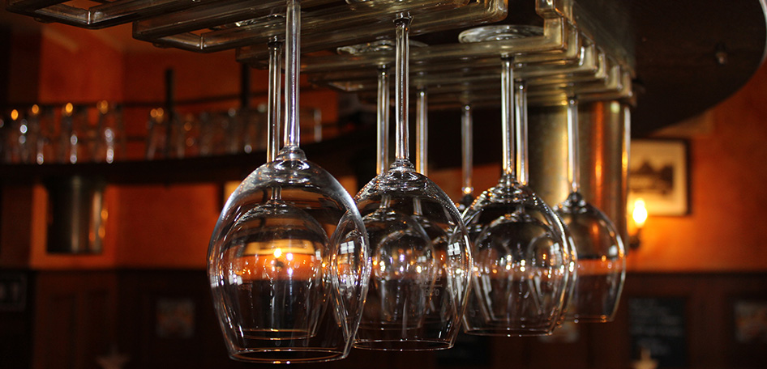

Reguläre Speisekarte
Unsere große Karte
Speisekarte herunterladen
Unsere aktuellen Karten als PDF, immer auf dem neuesten Stand.
Unsere große Karte
Speisekarte herunterladenFür Gruppen und Gesellschaften ab 15 Personen
Kleine Karte herunterladenJeden Freitag, 11:30 bis 15:00 Uhr
Neben der regulären Speisekarte bieten wir freitagmittags Steaks zu unschlagbaren Preisen an. Wir empfehlen eine Tischreservierung!
Außer an Feiertagen.
Steak-Freitag reservierenBierzimmer · Saal · Gastraum · Bierhütte
Vier Räume für jeden Anlass, drinnen wie draußen. Vom hellen Bierzimmer über den großen Festsaal bis zur überdachten Bierhütte. Klicken Sie sich durch die Galerien und finden Sie den passenden Rahmen für Ihre Feier.
Über 160 Jahre am Bösch
Es war noch vor der Kaiserzeit. 1860 erwarb Hermann Amel die damalige Gaststätte „Zur Waidmannsruh". Da man zu Hermann „Manes" sagte und der Wald nicht weit entfernt war (Mühlenbusch/Bösch), entstand der Name Manes am Bösch. Einige Jahre später folgte der Saalbau mit Kegelbahn.
1899 übernahm der Sohn Josef Amel die Gaststätte. Dieser ließ gleich neben dem alten Haus eine neue, große Gaststätte bauen, den heutigen „Manes".
In den 50er Jahren war Manes am Bösch weit und breit die einzige Gaststätte, die mit Schaschlik und Hähnchen Speisen verkaufte und damit einen großen Zulauf hatte. Bis in die 80er Jahre wurde im Traditionslokal gegessen, getrunken und gefeiert.
Der gastronomische Betrieb mit wechselnden Wirten wurde im Jahr 1987 zunächst eingestellt, als die Stadt Dormagen das Anwesen kaufte. Bis zum Jahr 1991 wurde es unter anderem als Asylantenheim genutzt. Der Saal, der mit Hilfe der Vereine und Bürger restauriert und erhalten wurde, konnte aber weiterhin genutzt werden.
1991 investierte schließlich die Firma Harzheim (Garde Kölsch) in einen großen Umbau, um das Traditionshaus wieder mit gastronomischem Leben zu füllen. Am 15.10.1991 übernahm Boris Orschel den Betrieb als Pächter der Garde-Brauerei.
Boris Orschel erwarb das komplette Anwesen als Eigentümer. Das bewährte gutbürgerliche Konzept sollte langfristig erhalten und erfolgreich fortgeführt werden. Ebenso sollte der dazugehörige Saal den ansässigen Vereinen dauerhaft zur Verfügung stehen.
Im Jahr 2012 kam das „Böscher" Landbier an den Zapfhahn. Das untergärige ungefilterte Bier nach Pilsener Brauart und nach eigenem Rezept wurde zum Lieblingsbier der Gäste.
Das Restaurant wurde durch das Bierzimmer erweitert. Der Anbau schaffte 28 zusätzliche Sitzplätze und bietet den idealen Rahmen für kleinere Gesellschaften sowie das À-la-carte-Geschäft.
Mit der Ausbildung von Boris Orschel entwickelte sich Manes am Bösch zum Treffpunkt für Bierbegeisterte. Bier-Tastings und eine ständige Auswahl an Craft-Bieren erweitern das Angebot dauerhaft.
Mit der Umgestaltung des Biergartens und dem Bau einer Bierhütte mit Photovoltaikanlage entstand eine zusätzliche, überdachte Open-Air-Fläche, die sich ideal für besondere Events eignet.
Mit Wirkung zum 01.01.2026 wurde Janina Felbor als gleichberechtigte Gesellschafterin in den Gastronomiebetrieb aufgenommen. Boris Orschel fungiert seitdem sowohl als Verpächter als auch als Gesellschafter des Gastronomiebetriebs.
Anfahrt und Kontakt
Kostenlose Parkplätze am Haus und rund um den Biergarten.
Reservierung
Ihre Reservierungsanfrage läuft bequem über unser Formular. Wählen Sie den passenden Bereich, wir melden uns zur Bestätigung. Gerade zu Stoßzeiten sind wir telefonisch nicht immer erreichbar, über das Formular sind Sie auf der sicheren Seite.
Reservierungen sind ausschließlich für den Innenbereich und ausschließlich über das Formular möglich. Für den Außenbereich (Biergarten) nehmen wir keine Reservierungen an.
| Montag | Ruhetag |
|---|---|
| Dienstag | ab 17:00 Uhr |
| Mittwoch | ab 17:00 Uhr |
| Donnerstag | ab 17:00 Uhr |
| Freitag | 11:30 bis 15:00 und ab 17:00 Uhr |
| Samstag | ab 17:00 Uhr |
| Sonntag | ab 11:30 Uhr |
| Feiertage | ab 11:30 Uhr |